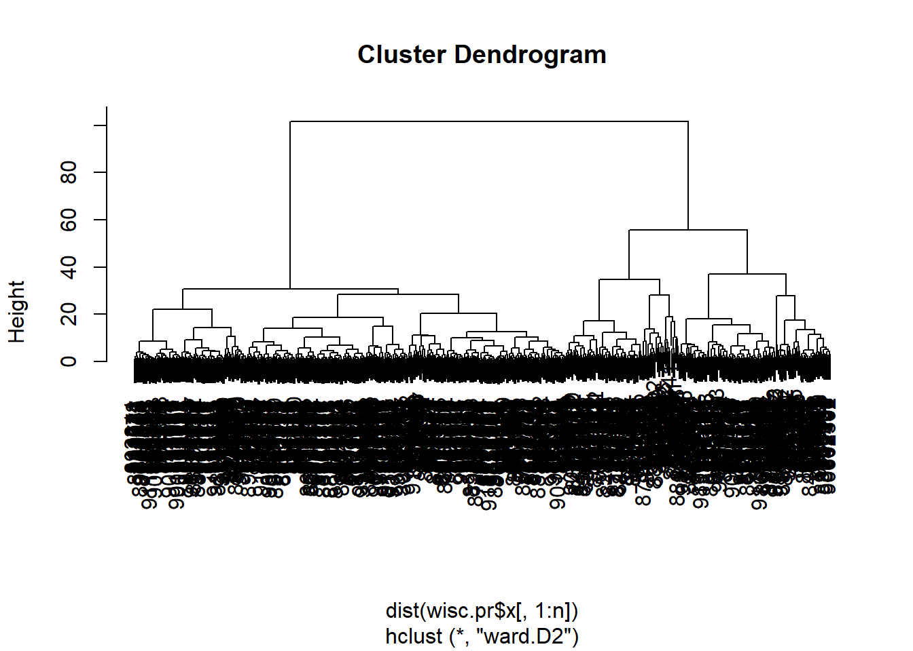
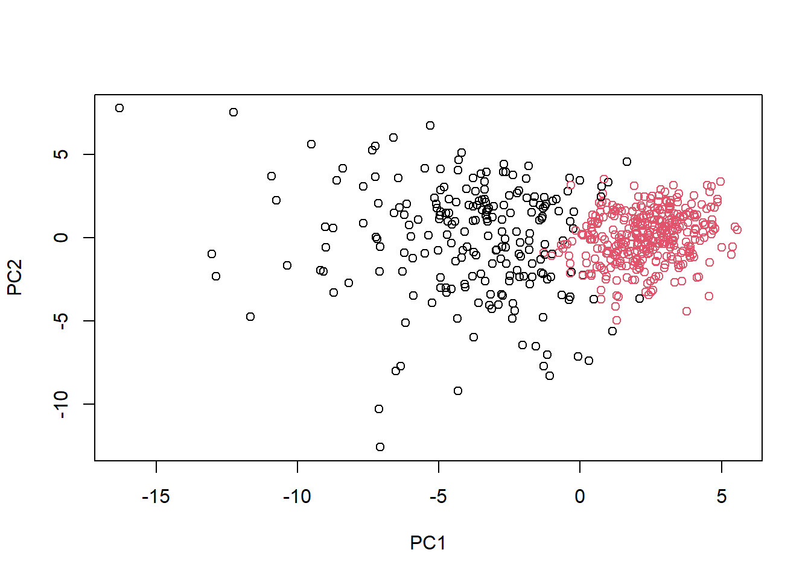
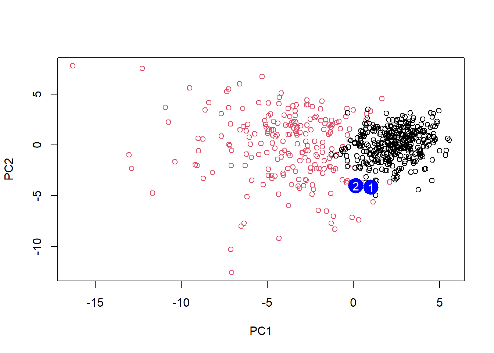

# Save your input data file into your Project directory
fna.data <- "C:/Users/sabri/OneDrive/Desktop/BIMM 143/class08/WisconsinCancer.csv"
# Complete the following code to input the data and store as wisc.df
wisc.df <- read.csv(fna.data, row.names=1)Class 8 Mini-Project: Unsupervised Learning Analysis of Human Breast Cancer Cells
Exploratory data analysis
Importing Data
head(wisc.df) diagnosis radius_mean texture_mean perimeter_mean area_mean
842302 M 17.99 10.38 122.80 1001.0
842517 M 20.57 17.77 132.90 1326.0
84300903 M 19.69 21.25 130.00 1203.0
84348301 M 11.42 20.38 77.58 386.1
84358402 M 20.29 14.34 135.10 1297.0
843786 M 12.45 15.70 82.57 477.1
smoothness_mean compactness_mean concavity_mean concave.points_mean
842302 0.11840 0.27760 0.3001 0.14710
842517 0.08474 0.07864 0.0869 0.07017
84300903 0.10960 0.15990 0.1974 0.12790
84348301 0.14250 0.28390 0.2414 0.10520
84358402 0.10030 0.13280 0.1980 0.10430
843786 0.12780 0.17000 0.1578 0.08089
symmetry_mean fractal_dimension_mean radius_se texture_se perimeter_se
842302 0.2419 0.07871 1.0950 0.9053 8.589
842517 0.1812 0.05667 0.5435 0.7339 3.398
84300903 0.2069 0.05999 0.7456 0.7869 4.585
84348301 0.2597 0.09744 0.4956 1.1560 3.445
84358402 0.1809 0.05883 0.7572 0.7813 5.438
843786 0.2087 0.07613 0.3345 0.8902 2.217
area_se smoothness_se compactness_se concavity_se concave.points_se
842302 153.40 0.006399 0.04904 0.05373 0.01587
842517 74.08 0.005225 0.01308 0.01860 0.01340
84300903 94.03 0.006150 0.04006 0.03832 0.02058
84348301 27.23 0.009110 0.07458 0.05661 0.01867
84358402 94.44 0.011490 0.02461 0.05688 0.01885
843786 27.19 0.007510 0.03345 0.03672 0.01137
symmetry_se fractal_dimension_se radius_worst texture_worst
842302 0.03003 0.006193 25.38 17.33
842517 0.01389 0.003532 24.99 23.41
84300903 0.02250 0.004571 23.57 25.53
84348301 0.05963 0.009208 14.91 26.50
84358402 0.01756 0.005115 22.54 16.67
843786 0.02165 0.005082 15.47 23.75
perimeter_worst area_worst smoothness_worst compactness_worst
842302 184.60 2019.0 0.1622 0.6656
842517 158.80 1956.0 0.1238 0.1866
84300903 152.50 1709.0 0.1444 0.4245
84348301 98.87 567.7 0.2098 0.8663
84358402 152.20 1575.0 0.1374 0.2050
843786 103.40 741.6 0.1791 0.5249
concavity_worst concave.points_worst symmetry_worst
842302 0.7119 0.2654 0.4601
842517 0.2416 0.1860 0.2750
84300903 0.4504 0.2430 0.3613
84348301 0.6869 0.2575 0.6638
84358402 0.4000 0.1625 0.2364
843786 0.5355 0.1741 0.3985
fractal_dimension_worst
842302 0.11890
842517 0.08902
84300903 0.08758
84348301 0.17300
84358402 0.07678
843786 0.12440Removing the first column/diagnosis column and saving in new dataset
wisc.data <- wisc.df[,-1]Saving the diagnosis column as a vector. factor() converts vector of values into a variable by assigning levels.
# Create diagnosis vector for later
diagnosis <- factor(wisc.df$diagnosis)Q1. How many observations are in this dataset?
nrow(wisc.data)[1] 569There are 569 observations in this dataset.
Q2. How many of the observations have a malignant diagnosis?
sum(diagnosis == "M")[1] 212212 of the observations have a malignant diagnosis.
Q3. How many variables/features in the data are suffixed with _mean?
grep() search for matches to a pattern
length(grep("_mean",names(wisc.data)))[1] 10There are 10 variables with the suffix “_mean”.
Principal Component Analysis (PCA)
Performing PCA
Check standard deviation to see if need to be scaled
# Check column means and standard deviations
colMeans(wisc.data) radius_mean texture_mean perimeter_mean
1.412729e+01 1.928965e+01 9.196903e+01
area_mean smoothness_mean compactness_mean
6.548891e+02 9.636028e-02 1.043410e-01
concavity_mean concave.points_mean symmetry_mean
8.879932e-02 4.891915e-02 1.811619e-01
fractal_dimension_mean radius_se texture_se
6.279761e-02 4.051721e-01 1.216853e+00
perimeter_se area_se smoothness_se
2.866059e+00 4.033708e+01 7.040979e-03
compactness_se concavity_se concave.points_se
2.547814e-02 3.189372e-02 1.179614e-02
symmetry_se fractal_dimension_se radius_worst
2.054230e-02 3.794904e-03 1.626919e+01
texture_worst perimeter_worst area_worst
2.567722e+01 1.072612e+02 8.805831e+02
smoothness_worst compactness_worst concavity_worst
1.323686e-01 2.542650e-01 2.721885e-01
concave.points_worst symmetry_worst fractal_dimension_worst
1.146062e-01 2.900756e-01 8.394582e-02 apply(wisc.data,2,sd) radius_mean texture_mean perimeter_mean
3.524049e+00 4.301036e+00 2.429898e+01
area_mean smoothness_mean compactness_mean
3.519141e+02 1.406413e-02 5.281276e-02
concavity_mean concave.points_mean symmetry_mean
7.971981e-02 3.880284e-02 2.741428e-02
fractal_dimension_mean radius_se texture_se
7.060363e-03 2.773127e-01 5.516484e-01
perimeter_se area_se smoothness_se
2.021855e+00 4.549101e+01 3.002518e-03
compactness_se concavity_se concave.points_se
1.790818e-02 3.018606e-02 6.170285e-03
symmetry_se fractal_dimension_se radius_worst
8.266372e-03 2.646071e-03 4.833242e+00
texture_worst perimeter_worst area_worst
6.146258e+00 3.360254e+01 5.693570e+02
smoothness_worst compactness_worst concavity_worst
2.283243e-02 1.573365e-01 2.086243e-01
concave.points_worst symmetry_worst fractal_dimension_worst
6.573234e-02 6.186747e-02 1.806127e-02 Data should be scale since the mean and standard deviation varies a lot among the different variables from a few hundreds to hundredths.
Performing PCA on scaled data.
#Rescaling wisc.data
wisc.data.scaled <- scale(wisc.data)# Perform PCA
wisc.pr <- prcomp(wisc.data.scaled)#Look at summary of results
summary(wisc.pr)Importance of components:
PC1 PC2 PC3 PC4 PC5 PC6 PC7
Standard deviation 3.6444 2.3857 1.67867 1.40735 1.28403 1.09880 0.82172
Proportion of Variance 0.4427 0.1897 0.09393 0.06602 0.05496 0.04025 0.02251
Cumulative Proportion 0.4427 0.6324 0.72636 0.79239 0.84734 0.88759 0.91010
PC8 PC9 PC10 PC11 PC12 PC13 PC14
Standard deviation 0.69037 0.6457 0.59219 0.5421 0.51104 0.49128 0.39624
Proportion of Variance 0.01589 0.0139 0.01169 0.0098 0.00871 0.00805 0.00523
Cumulative Proportion 0.92598 0.9399 0.95157 0.9614 0.97007 0.97812 0.98335
PC15 PC16 PC17 PC18 PC19 PC20 PC21
Standard deviation 0.30681 0.28260 0.24372 0.22939 0.22244 0.17652 0.1731
Proportion of Variance 0.00314 0.00266 0.00198 0.00175 0.00165 0.00104 0.0010
Cumulative Proportion 0.98649 0.98915 0.99113 0.99288 0.99453 0.99557 0.9966
PC22 PC23 PC24 PC25 PC26 PC27 PC28
Standard deviation 0.16565 0.15602 0.1344 0.12442 0.09043 0.08307 0.03987
Proportion of Variance 0.00091 0.00081 0.0006 0.00052 0.00027 0.00023 0.00005
Cumulative Proportion 0.99749 0.99830 0.9989 0.99942 0.99969 0.99992 0.99997
PC29 PC30
Standard deviation 0.02736 0.01153
Proportion of Variance 0.00002 0.00000
Cumulative Proportion 1.00000 1.00000Q4. From your results, what proportion of the original variance is captured by the first principal components (PC1)?
44.27% of the original variance is captured by PC1.
Q5. How many principal components (PCs) are required to describe at least 70% of the original variance in the data?
cumsum(summary(wisc.pr)$importance[2,])>=0.7 PC1 PC2 PC3 PC4 PC5 PC6 PC7 PC8 PC9 PC10 PC11 PC12 PC13
FALSE FALSE TRUE TRUE TRUE TRUE TRUE TRUE TRUE TRUE TRUE TRUE TRUE
PC14 PC15 PC16 PC17 PC18 PC19 PC20 PC21 PC22 PC23 PC24 PC25 PC26
TRUE TRUE TRUE TRUE TRUE TRUE TRUE TRUE TRUE TRUE TRUE TRUE TRUE
PC27 PC28 PC29 PC30
TRUE TRUE TRUE TRUE Three PCs are needed to describe at least 70% of the original variance in the data.
Q6. How many principal components (PCs) are required to describe at least 90% of the original variance in the data?
cumsum(summary(wisc.pr)$importance[2,])>=0.9 PC1 PC2 PC3 PC4 PC5 PC6 PC7 PC8 PC9 PC10 PC11 PC12 PC13
FALSE FALSE FALSE FALSE FALSE FALSE TRUE TRUE TRUE TRUE TRUE TRUE TRUE
PC14 PC15 PC16 PC17 PC18 PC19 PC20 PC21 PC22 PC23 PC24 PC25 PC26
TRUE TRUE TRUE TRUE TRUE TRUE TRUE TRUE TRUE TRUE TRUE TRUE TRUE
PC27 PC28 PC29 PC30
TRUE TRUE TRUE TRUE Seven PCs are needed to describe at least 90% of the original variance in the data.
Interpreting PCA Results
Creating biplot
biplot(wisc.pr)
Q7. What stands out to you about this plot? Is it easy or difficult to understand? Why?
What stands out the most is that all the variables/pink vectors seems to be all pointing left/into the negative of PC1. This plot is difficult to understand as all the names are overlapping each other.
Changing to scatterplots
# Scatter plot observations by components 1 and 2
plot(wisc.pr$x[,1], wisc.pr$x[,2], col=diagnosis, xlab = "PC1", ylab = "PC2")
Q8. Generate a similar plot for principal components 1 and 3. What do you notice about these plots?
# Repeat for components 1 and 3
plot(wisc.pr$x[,1],wisc.pr$x[,3], col = diagnosis, xlab = "PC1", ylab = "PC3")
Both graphs seem to show that the red dots signifying malignant ones are more left than the benign ones on the axis of PC1.
ggplot
# Create a data.frame for ggplot
df <- as.data.frame(wisc.pr$x)
df$diagnosis <- diagnosis
# Load the ggplot2 package
library(ggplot2)
# Make a scatter plot colored by diagnosis
ggplot(df) +
aes(PC1, PC2, col=df$diagnosis) +
geom_point()Warning: Use of `df$diagnosis` is discouraged.
ℹ Use `diagnosis` instead.
Variance Explained
# Calculate variance of each component by squaring standard deviation
pr.var <- wisc.pr$sdev^2
head(pr.var)[1] 13.281608 5.691355 2.817949 1.980640 1.648731 1.207357Calculating the variance explained by each principal component over total
# Variance explained by each principal component: pve
pve <- pr.var / sum(pr.var)
# Plot variance explained for each principal component
plot(pve, xlab = "Principal Component",
ylab = "Proportion of Variance Explained",
ylim = c(0, 1), type = "o")
Can also make a scree plot + other plots
# Alternative scree plot of the same data, note data driven y-axis
barplot(pve, ylab = "Precent of Variance Explained",
names.arg=paste0("PC",1:length(pve)), las=2, axes = FALSE)
axis(2, at=pve, labels=round(pve,2)*100 )
## ggplot based graph
#install.packages("factoextra")
library(factoextra)Welcome! Want to learn more? See two factoextra-related books at https://goo.gl/ve3WBafviz_eig(wisc.pr, addlabels = TRUE)
Communicating PCA results
Q9. For the first principal component, what is the component of the loading vector (i.e. wisc.pr$rotation[,1]) for the feature concave.points_mean?
wisc.pr$rotation["concave.points_mean", 1][1] -0.2608538wisc.pr$rotaion[,1] represents how strongly this influences PC1. Since the loading is -0.26, it means that it has a negative contribution to PC1. In context of breast cancer, it signifies that cells with more concave points will have lower PC1 scores.
Q10. What is the minimum number of principal components required to explain 80% of the variance of the data?
cumsum(pve) >= 0.8 [1] FALSE FALSE FALSE FALSE TRUE TRUE TRUE TRUE TRUE TRUE TRUE TRUE
[13] TRUE TRUE TRUE TRUE TRUE TRUE TRUE TRUE TRUE TRUE TRUE TRUE
[25] TRUE TRUE TRUE TRUE TRUE TRUEFive principal components are required to explain 80% of the variance of the data.
Hierarchical clustering
# Scale the wisc.data data using the "scale()" function
data.scaled <- scale(wisc.data)data.scaleis the same as wisc.df.scale done earlier
Calculate the (Euclidean) distances between all pairs of observations in the new scaled dataset
data.dist <- dist(data.scaled)Create a hierarchical clustering model
wisc.hclust <- hclust(data.dist, method="complete")Results of hierarchical clustering
Q11. Using the plot() and abline() functions, what is the height at which the clustering model has 4 clusters?
plot(wisc.hclust)
abline(h=19, col="red", lty=2)
The height with four cluster is between 15 and 20.
Selecting number of clusters
Cutting the tree so there are only 4 clusters
wisc.hclust.clusters <- cutree(wisc.hclust,k=4)Use table to compare the cluster to actual diagnosis
table(wisc.hclust.clusters, diagnosis) diagnosis
wisc.hclust.clusters B M
1 12 165
2 2 5
3 343 40
4 0 2Q12. Can you find a better cluster vs diagnoses match by cutting into a different number of clusters between 2 and 10?
table(cutree(wisc.hclust,k=4), diagnosis) diagnosis
B M
1 12 165
2 2 5
3 343 40
4 0 2From clusters 2 and 10, 4 is the best with the most amount of separation between benign and malignant ane little fragmentation.
Q13. Which method gives your favorite results for the same data.dist dataset? Explain your reasoning.
wisc.single <- hclust(data.dist, method="single")
wisc.complete <- hclust(data.dist, method="complete")
wisc.average <- hclust(data.dist, method="average")
wisc.ward <- hclust(data.dist, method="ward.D2")
single.clusters <- cutree(wisc.single,k=4)
table(single.clusters, diagnosis) diagnosis
single.clusters B M
1 356 209
2 1 0
3 0 2
4 0 1complete.clusters <- cutree(wisc.complete,k=4)
table(complete.clusters, diagnosis) diagnosis
complete.clusters B M
1 12 165
2 2 5
3 343 40
4 0 2average.clusters <- cutree(wisc.average,k=4)
table(average.clusters, diagnosis) diagnosis
average.clusters B M
1 355 209
2 2 0
3 0 1
4 0 2ward.clusters <- cutree(wisc.ward,k=4)
table(ward.clusters, diagnosis) diagnosis
ward.clusters B M
1 0 115
2 6 48
3 337 48
4 14 1The ward.D2 method worked the best. It created the clearest separation between malignant and benign cells as cluster 1 had all malignant and cluster 3 is mostly benign. The single and average created one big mixed cluster and complete had more mixing than the ward.
Optional: K-menas clustering
Using kmeans
wisc.km <- kmeans(wisc.data.scaled, centers=2, nstart=20)Comparing kmeans to actual diagnoses
table(wisc.km$cluster, diagnosis) diagnosis
B M
1 14 175
2 343 37Q14. How well does k-means separate the two diagnoses? How does it compare to your hclust results?
It was able to separate the two diagnoses fairly well using the k-mean. It is slightly better than the hclust with four clusters but a lot better if only using two clusters in hclust. There are a little less mixing within each cluster.
table(wisc.hclust.clusters, wisc.km$cluster)
wisc.hclust.clusters 1 2
1 160 17
2 7 0
3 20 363
4 2 0Clusters 1,2,4 from hierarchical are equivalents to cluster 2 from kmeans, and cluster 3 is equivalent to kmeans cluster 1.
##Combining methods
Clustering on PCA results
n <- which(cumsum(pve) >= 0.9)
wisc.pr.hclust <- hclust(dist(wisc.pr$x[,1:n]), method="ward.D2")Warning in 1:n: numerical expression has 24 elements: only the first usedplot(wisc.pr.hclust)
Two distinct clusters seen.
grps <- cutree(wisc.pr.hclust, k=2)
table(grps)grps
1 2
216 353 table(grps, diagnosis) diagnosis
grps B M
1 28 188
2 329 24plot(wisc.pr$x[,1:2], col=grps)
plot(wisc.pr$x[,1:2], col=diagnosis)
Switching color so it match each other by releveling
g <- as.factor(grps)
levels(g)[1] "1" "2"g <- relevel(g,2)
levels(g)[1] "2" "1"# Plot using our re-ordered factor
plot(wisc.pr$x[,1:2], col=g)
Note: can make 3D plots using rgl and ploty packages (not included here for pdf submission)
#library(rgl)
#plot3d(wisc.pr$x[,1:3], xlab="PC 1", ylab="PC 2", zlab="PC 3", cex=1.5, size=1, type="s", col=grps)## Use the distance along the first 7 PCs for clustering i.e. wisc.pr$x[, 1:7]
wisc.pr.hclust <- hclust(dist(wisc.pr$x[,1:7]), method="ward.D2")Model into 2 clusters
wisc.pr.hclust.clusters <- cutree(wisc.pr.hclust, k=2)Q15. How well does the newly created model with four clusters separate out the two diagnoses?
# Compare to actual diagnoses
table(wisc.pr.hclust.clusters, diagnosis) diagnosis
wisc.pr.hclust.clusters B M
1 28 188
2 329 24This is even better than before. It is cleaner with less mixing.
Q16. How well do the k-means and hierarchical clustering models you created in previous sections (i.e. before PCA) do in terms of separating the diagnoses? Again, use the table() function to compare the output of each model (wisc.km$cluster and wisc.hclust.clusters) with the vector containing the actual diagnoses.
table(wisc.km$cluster, diagnosis) diagnosis
B M
1 14 175
2 343 37table(wisc.hclust.clusters, diagnosis) diagnosis
wisc.hclust.clusters B M
1 12 165
2 2 5
3 343 40
4 0 2These two methods separate them fairly decently as there are clear clusters of where there are majority of one diagnosis over the other.
Sensitivity/Specificity
Q17. Which of your analysis procedures resulted in a clustering model with the best specificity? How about sensitivity?
table(wisc.pr.hclust.clusters, diagnosis) diagnosis
wisc.pr.hclust.clusters B M
1 28 188
2 329 24table(wisc.km$cluster, diagnosis) diagnosis
B M
1 14 175
2 343 37table(wisc.hclust.clusters, diagnosis) diagnosis
wisc.hclust.clusters B M
1 12 165
2 2 5
3 343 40
4 0 2For ward hcluster: Sensitivity = 188/(188+24) = 0.887 Specificity = 329/(329+28) = 0.922
For kmeans: Sensitivity = 175/(175+37) = 0.825 Specificity = 343/(343+14) = 0.961
For complete hcluster: Sensitivity = 165/(165+40+5+2) = 0.778 Specificity = 343/(343+12+2) = 0.961
For specificity, kmeans and the complete hcluster performs the best, while for sensitivity, ward hcluster is the best.
Prediction
#url <- "new_samples.csv"
url <- "C:/Users/sabri/Downloads/new_samples.csv"
new <- read.csv(url)
npc <- predict(wisc.pr, newdata=new)
npc PC1 PC2 PC3 PC4 PC5 PC6 PC7
[1,] -10.76452 -10.093978 -0.5897994 -4.164748 10.61922 -1.630738 0.03566861
[2,] -18.09606 -9.967098 -2.1549431 -4.006848 6.69687 -2.034714 1.25088149
PC8 PC9 PC10 PC11 PC12 PC13 PC14
[1,] 0.7308658 -1.580861 3.166451 -0.7167150 3.850569 -0.8259764 1.0195729
[2,] 0.6308585 -1.155629 3.608207 -0.3405375 2.288732 -0.3976672 0.1347203
PC15 PC16 PC17 PC18 PC19 PC20 PC21
[1,] 3.735687 -4.068783 1.0877034 0.9985959 1.022760 -2.430215 -1.295749
[2,] 3.543905 -3.749616 0.7613603 1.1763217 1.366702 -2.609643 -1.541050
PC22 PC23 PC24 PC25 PC26 PC27 PC28
[1,] -1.348026 -0.7388274 -1.083000 -0.4220831 -1.892993 -1.176056 0.05527974
[2,] -1.424290 -0.7591376 -1.439202 -0.6508838 -1.981711 -1.397390 0.18112357
PC29 PC30
[1,] 0.2658028 0.05162840
[2,] 0.2842191 0.02734355plot(wisc.pr$x[,1:2], col=g)
points(npc[,14], npc[,4], col="blue", pch=16, cex=3)
text(npc[,14], npc[,4], c(1,2), col="white")
Q18. Which of these new patients should we prioritize for follow up based on your results?
Patient 2 should be prioritize as it is more likely that he/she has a malignant one based on the prediction.